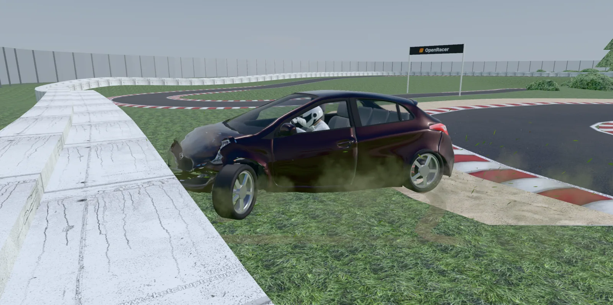
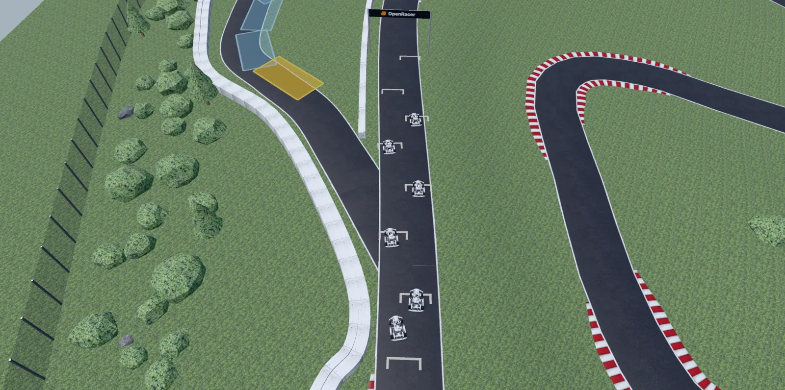

A racing simulator
that lives in a tab.
OpenRacer simulates the whole car: a body on springs that dents in a crash, four tyres that heat up and wear out, a clutch, a gearbox and differentials. You can drive a car or a motorcycle with the keyboard, a gamepad or a racing wheel with force feedback, race against AI cars, and build your own cars and tracks.


See it in action
A minute and a quarter of OpenRacer 2.2: a standing start, AI opponents, a drift, damage that stays, a pit stop that repairs the car, a motorcycle and its ragdoll crash, a replay with a free camera, and the video, car and track editors. Filmed from the screen, with the sound of the game.
What's new in 2.2
Every car is now a soft body, and the damage is the story of this version.
Damage that stays
A shell of nodes and beams dents and keeps the dent. Doors, hoods and bumpers swing open and come off, wheels bend or break away.
Motorcycles and a ragdoll
Bikes are steered by leaning. In a crash the rider is thrown off as a ragdoll.
Pit stops that repair
A crashed car is jacked up in its box: tyres, fuel and the broken parts are fixed while the HUD counts down.
About the project
OpenRacer started as an open-source initiative by Chris Barnard to build a high-quality racing simulation that runs in the browser. This site is about a fork of it, in which the driving model, the racing and the tools have been taken a long way further. The game needs no installation: it is a static web app that uses WebGL, so any recent browser will do.
A car, not a sprite
A soft body of nodes and beams that dents and loses parts, a quarter-car suspension at every corner, tyres that are shells of nodes with load, pressure, camber, toe, heat and wear, and a driveline with clutch, gearbox and differentials.
Races with a result
Standing starts with a countdown, laps, AI opponents on a racing line, a ghost of your best lap, lap records, fuel, tyre wear, pit stops and a drag strip.
Keyboard to racing wheel
Every action can have a key, a gamepad button and a wheel input at once. Wheels with force feedback work through WebHID, with the torque worked out from the physics.
Make your own
A car editor with a live test bench, a track editor that can also draw a track from nothing, and a tuning menu that changes everything while you drive.
Calculated engine sound
The sound comes from the gas in the cylinders and the exhaust, a port of parts of engine-sim to an AudioWorklet, not from a loop.
Rain, snow and night
Clear, cloudy, fog, rain or snow, from dawn to night. A wet or snowy road grips less, for you and for the AI.
Replays and video
Everything is recorded. Keep replays in a library, watch them with free and cinematic cameras, and cut them into a video in the video editor.
Yours stays yours
Cars and tracks you make or import live in your own browser or in a folder on your PC. Nothing is uploaded to the server, so the browser is the only place they live: the game can back up your settings and records to a file, and exports cars and tracks as zip files. What can be lost.
In the game
All of these are screenshots of the game itself, taken in the browser.



Weather and time of day


The original and the fork
Both are on GitHub and both are GPLv3. The original is the project that Chris Barnard began. The fork is where the work shown on this site has been done.
digi-chris/OpenRacer
The open-source racing simulation by Chris Barnard (digi-chris), with its demo car and its first track.
github.com/digi-chris/OpenRacer The forkWeArtStudioNL/openracer-agent-port
The fork with the new physics, racing, editors, wheel support, garage and the rest of what the docs describe.
github.com/WeArtStudioNL/openracer-agent-portWhat the fork adds
Vehicle physics
A soft body that dents, quarter-car suspension, Ackermann, aero per axle, roll centres, camber, toe, tyre pressure, a tyre made of nodes, six kinds of gearbox, turbo, ESC and traction control. A bench runs the road tests of every car.
Race format
Laps, a 3-2-1 start, results, AI difficulty levels, ghost laps, records, fuel, tyre temperature and wear, pit lane stops.
Input
Steering that slows with speed on keyboard and gamepad, a gamepad steering assist, racing wheels with calibration, an H-pattern shifter and force feedback.
Car editor
Import a glb, find the wheels or take them from a library, build the engine and run it on a dyno, paint it, set the soft body and the driver, and test it on a bench with a drop, a drive and a crash test.
Track editor
Import a model or draw a loop of nodes, add tileable textures and prefabs, place gates, set the sky and sun, and record the AI racing line.
Suspension rig
Name the parts of a model (wishbones, springs, tie rods, a live axle) and they move with the real suspension and steering.
Soft body and damage
A shell of nodes and beams that dents and stays bent, doors and hoods on hinges that come loose, wheels that bend or come off. Cars dent each other.
Motorcycles
Bikes that are steered by leaning, with a rider who moves on the bike and a ragdoll crash.
Replays and video
A library of replays, takes recorded while you drive, and a video editor with clips, speed ramps and a camera track.
Weather
Clear, cloudy, fog, rain or snow at any time of day, with a road that gets wet or white and grips less.
Skidpad
A round pad that drives your car round by itself until it lets go and tells you the g it held.
Local garage
The game ships a standard set. Players keep their own cars and tracks in the browser or in a folder, and pass them on as zip files.
Built with Claude Code
The fork was developed together with AI. The code, the physics, the editors and the documentation of the fork were written in conversation with Claude Code, the coding tool of Anthropic.
The work was done step by step: an idea, a change, a test in the browser or in the physics bench, and a commit. Glenn Hofman set the direction, drove the result and decided what was good, and Claude Code wrote and tested most of the code. The original project and its first code are the work of Chris Barnard.
Run it yourself
The game here is hosted as plain files. To make cars and tracks with the editors on your own machine, run the small helper server from a checkout of the fork.
To play
A recent Chrome, Edge, Firefox or Safari with WebGL 2. Chrome or Edge for force feedback on a wheel. Nothing to install: open the game.
To run it yourself
git and python3. No build step and no packages.
brew install git python
git clone https://github.com/WeArtStudioNL/openracer-agent-port.git
cd openracer-agent-port
./start-server.shsudo apt install git python3
git clone https://github.com/WeArtStudioNL/openracer-agent-port.git
cd openracer-agent-port
./start-server.shwinget install Git.Git Python.Python.3.12
git clone https://github.com/WeArtStudioNL/openracer-agent-port.git
cd openracer-agent-port
py -3 tools\serve.py 8000
start http://localhost:8000It opens http://localhost:8000. More in the docs.